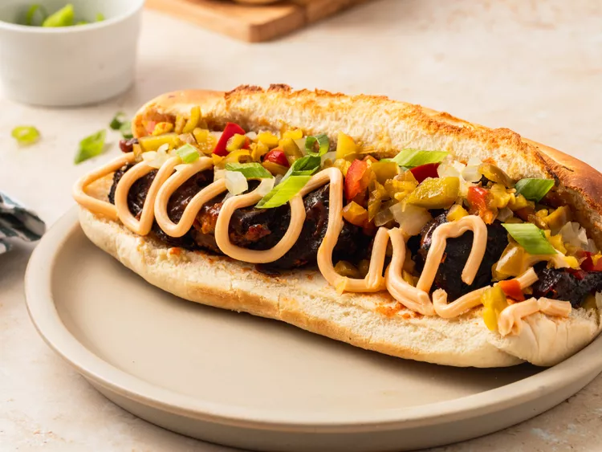

Cheese Steak

Description
Cheese steak sandwiches are a classic comfort food that's perfect for lunch or dinner. They're easy to make and packed with flavor. Follow the steps below to make your own cheese steak sandwiches:
Ingredients
- Steak (sirloin or ribeye)
- Onions
- Green peppers
- Provolone cheese
- Hoagie rolls
- Mayonnaise
- Mustard
Steps
- Cook the steak until it's done to your liking.
- Slice the steak thinly.
- Saute onions and green peppers until they're soft and caramelized.
- Split the hoagie rolls and toast them.
- Spread mayonnaise and mustard on the rolls.
- Layer the steak, onions, and green peppers on the rolls.
- Top with provolone cheese.
- Broil in the oven until the cheese is melted and bubbly.
- Serve hot and enjoy!